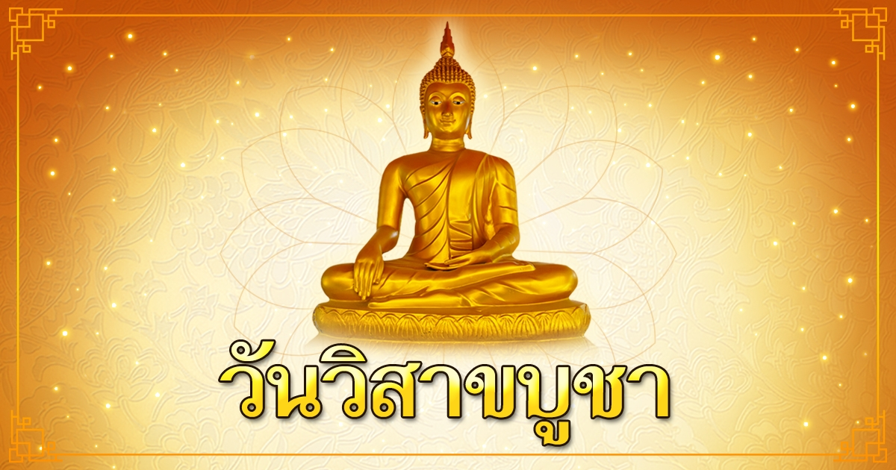
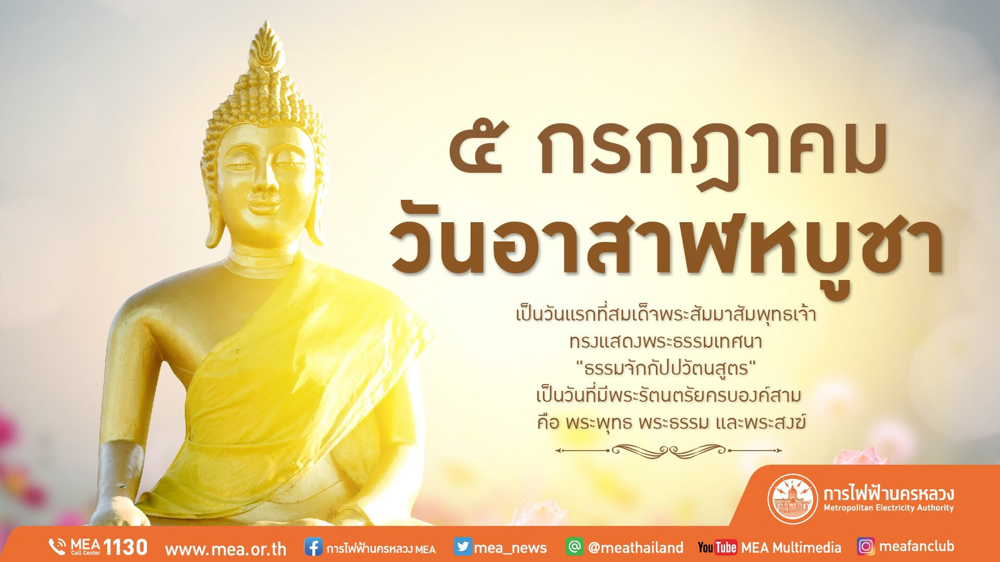
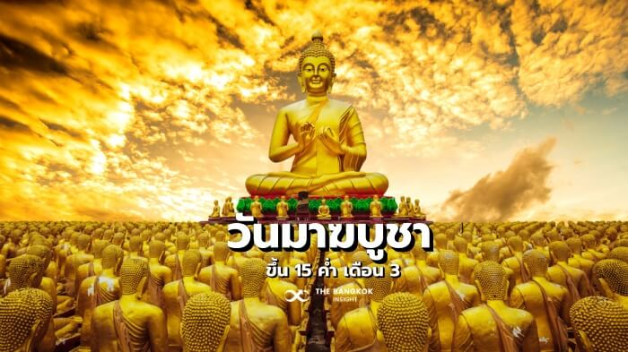

วันสำคัญทางพระพุทธศาสนามีความหมายลึกซึ้งสำหรับผู้ปฏิบัติธรรม เป็นการระลึกถึงเหตุการณ์สำคัญในชีวิตของพระพุทธเจ้า และเป็นโอกาสสำหรับการไตร่ตรอง การปฏิบัติธรรม และการรวมตัวกันของชุมชน
วันวิสาขบูชา
วันวิสาขบูชา หรือวันพระพุทธเจ้า เป็นวันสำคัญที่สุดในพระพุทธศาสนา เป็นวันประสูติ ตรัสรู้ และปรินิพพานของพระพุทธเจ้า ตรงกับวันขึ้น 15 ค่ำ เดือน 6 ตามปฏิทินจันทรคติ ชาวพุทธไตร่ตรองถึงคำสอนของพระพุทธเจ้าและมุ่งมั่นในการปฏิบัติตามแนวทางแห่งการพัฒนาจิตวิญญาณ
วันอาสาฬหบูชา
วันอาสาฬหบูชา หรือวันธรรม เป็นวันที่ระลึกถึงการแสดงปฐมเทศนาของพระพุทธเจ้า พระองค์ประกาศหลักธรรมอริยสัจ 4 และมรรคมีองค์ 8 อันเป็นการหมุนกงล้อแห่งธรรม ชาวพุทธทำความเข้าใจคำสอนของพระพุทธเจ้าให้ลึกซึ้งยิ่งขึ้น และมุ่งมั่นในการปฏิบัติสติและเมตตากรุณา
วันมาฆบูชา
วันมาฆบูชา หรือวันสงฆ์ เป็นวันที่ระลึกถึงการชุมนุมโดยบังเอิญของพระอรหันต์ 1,250 รูป ซึ่งเป็นศิษย์ของพระพุทธเจ้า ชาวพุทธไตร่ตรองถึงความสำคัญของพระสงฆ์ ซึ่งเป็นชุมชนของผู้ปฏิบัติธรรม และคุณค่าของการปฏิบัติธรรมร่วมกัน